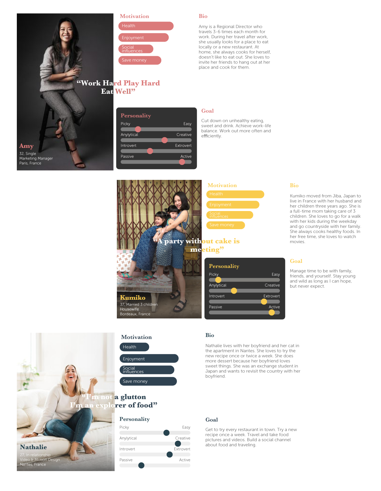
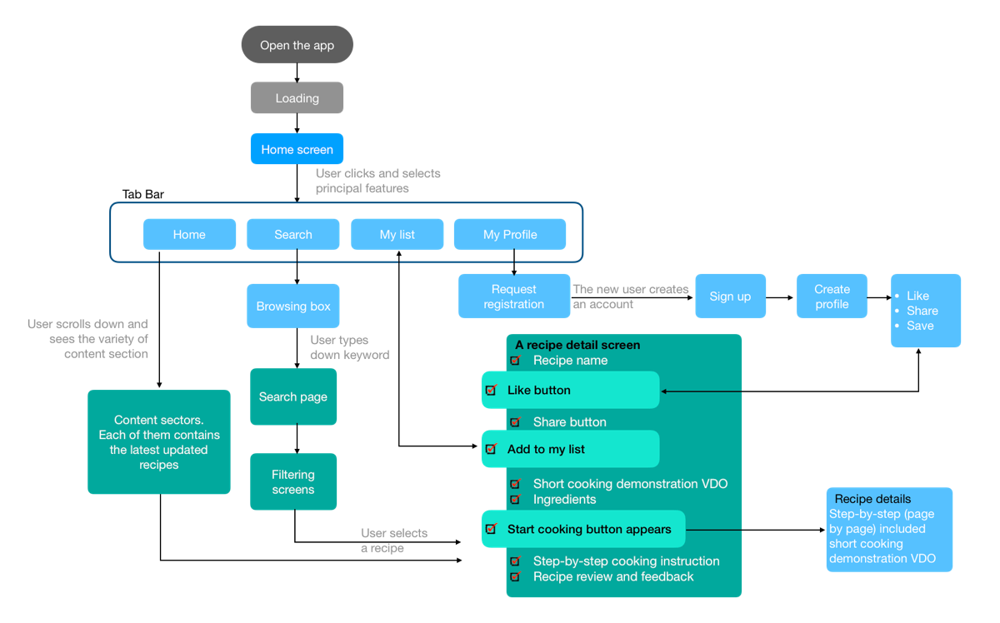
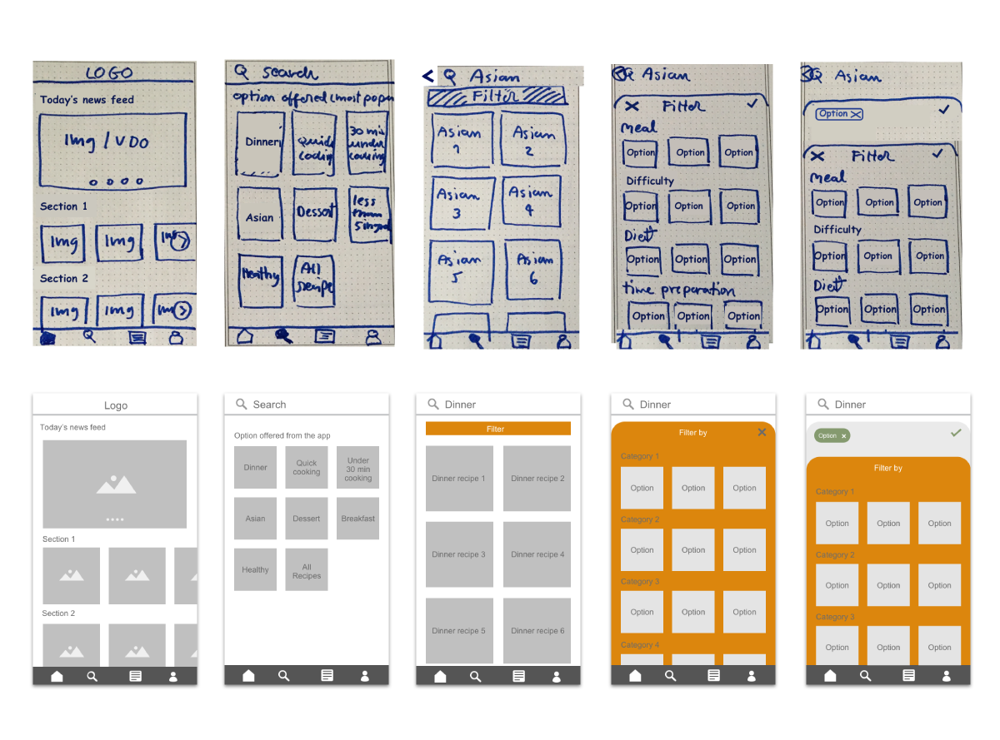
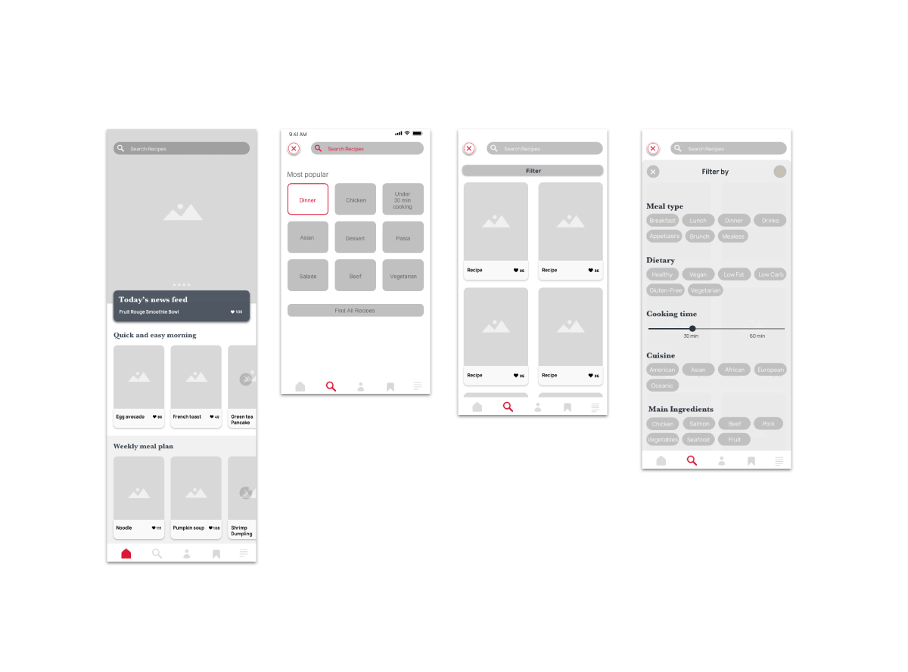
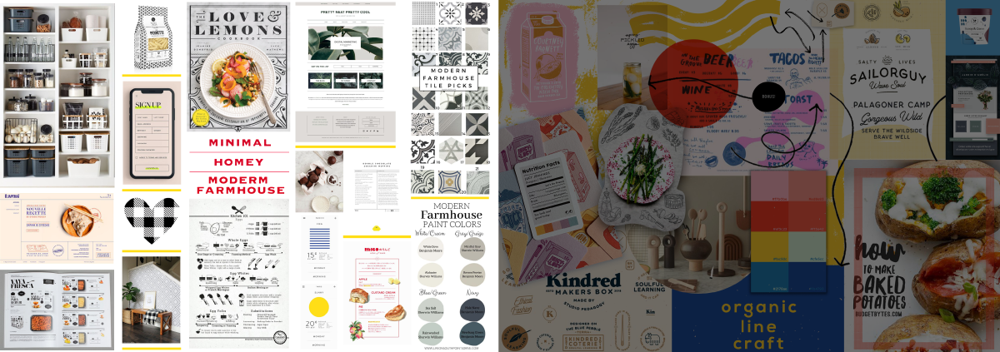
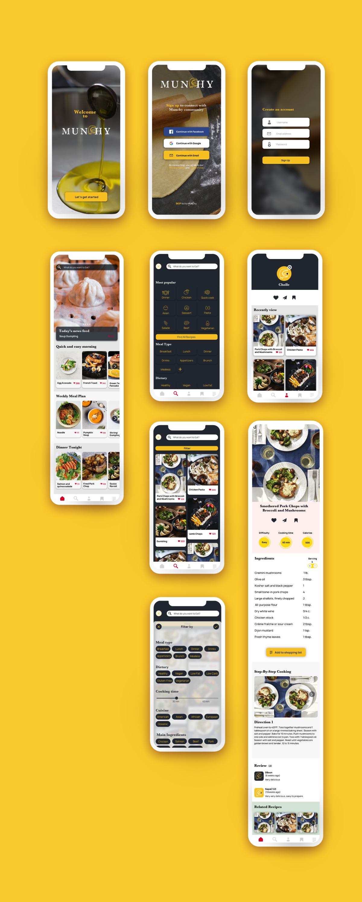
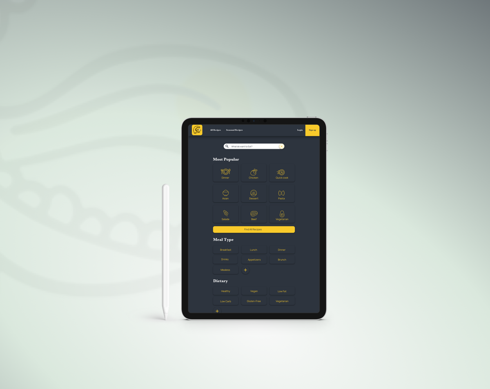
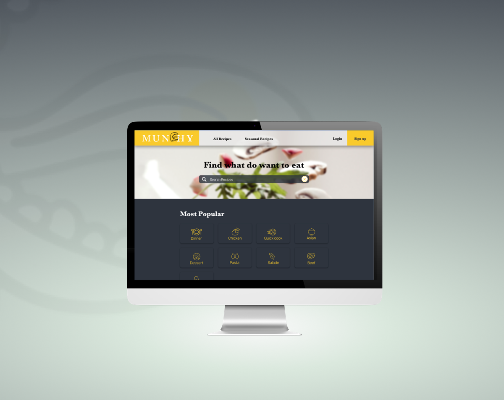
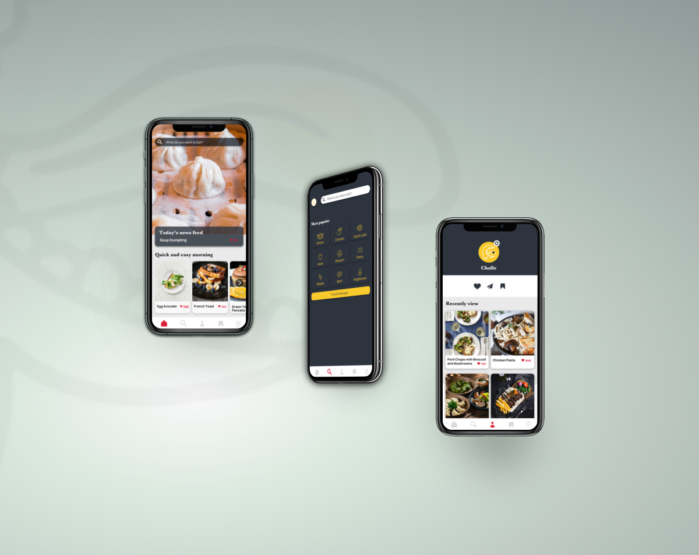

A community for discovering the new cooking recipes for users who love to find and to share their interesting recipes as well as exchange their cuisine experience.
Problem
The Responsive Recipe Application targets the users who want to discover new recipes and give them the ideas they can make. Most of my participants don’t use the recipe app. They typically use other social platforms to inspire their
cooking ideas like YouTube, Instagram, etc. The most common problems are:
Need over one platform to access.
Forget their previous recipes.
Could not remember where the recipes are.
Goal
To build the application based on users’ fundamental functionality and solving problems that users facing with their current cooking guides platform.
Early Stage
My Process
User Personas
After thoroughly researched the current products in the market, the first step of the design process was to interview with the potential users and created user personas based on my collected interviewees’ information, for example,
their
commonalities, their behaviors as well as their goals and motivations.

MVP determination

To determine what features were essential to creating MVP, I mainly focused on fundamental functionalities, such as searching and filtering using keyword, sharing their preference recipes, and accessing recipe detail information and
culinary demonstration.
I also created a user flow diagram showing how users can navigate through the app and access their desired page.
Mid Stage
At this stage, I sketched low fidelity wireframe and made it into a prototype. Then, I further tested with users to ensure that my design is easy to navigate and logical.
Roadblack
“how to design the screens to be as smooth and
as logic as possible?”
At this point, I encountered some roadblocks while working on searching and filtering design flow. The questions emerged on how to design the screens to be as smooth and as logical as possible. This was noticeably a new process for me
to
overcome this problem. I went back to work on competitive analysis focusing on navigation structure and comparing different products to accomplish my design decision.
Low Fidelity

The test results showed that the app is easy to use and navigate through the app’s functionalities. However, there are some confusing with certain design icons and language within the app. Personally, using low fidelity as a testing
prototype was very frustrating to the testers because of unfamiliar with the hand sketching method along with the novelty of the app. For my future project, I consider creating either a more proper version or a mid-fidelity version for the
testing.
I customized the design and created the mid-fidelity wireframe to make the screens more detailed and visual before moving to hi-fidelity creation.
Mid-Fidelity

Moodboard

For this project I have decided to use moodboard that go with the theme, minimal/Homey/Modern Farmhouse. I also love the other one which inspired from the idea that cooking is improvisation. However, the selected one is more incorporated
with my user research that the clear and clean layout and image will attract their interest and convince them to cook.
Final Stage
To complete, I created the mockup to demonstrate how the screen will appear on different devices.

Different breakpoints
Start from mobile, I continued to further develop for different screen sizes; XS for mobile, M for tablet, and L for desktop screen size.



Retrospective
The first challenge is to make the app differ from the existing apps in the market. After researching, I have observed that the essential functionalities have already been noticed in the market. For this reason, I dig deeper into the
demography research, trying to gather more user needs so as to create more explicit functionalities.
The second challenge is the user personas creation, which in my opinion can bring out the best through analyzing and brainstorming among team members rather than a single individual. This would generate a wider range of new ideas, more
fun to develop and unlock unsolved problems.
Future steps
I wanted to make the platform be further more than just the recipe app but to be more community platform like where the app can be integrated with the local grocery, allowing the user to check the product availabilities or check on
promotion items.